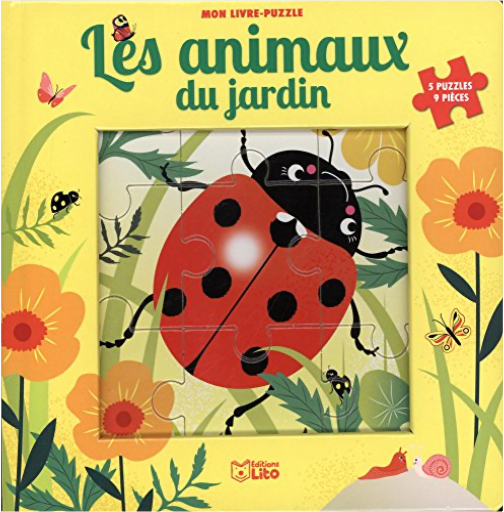

 les animaux du jardinmon livre puzzle  Découvre les animaux du jardin tout en t'amusant avec ces 5 puzzles de 9 pièces chacun. |  Un mot, une image, un son.Il suffit d'appuyer sur les puces sonores pour découvrir les cris des bébés animaux !Agneau, ânon, poussins, chiot, chaton et porcelet : autant d'animaux qui, dessinés par Marion Billet, feront craquer petits et grands !  Pour découvir les plus belles musiques classiques ! Mozart, Vivaldi, Strauss, Schubert, Tchaïkovski, Paganini... Dès 1 an. |

Julien
Collection Total:
1 888 Items
1 888 Items
Last Updated:
Aug 16, 2021
Aug 16, 2021


 Made with Delicious Library
Made with Delicious Library